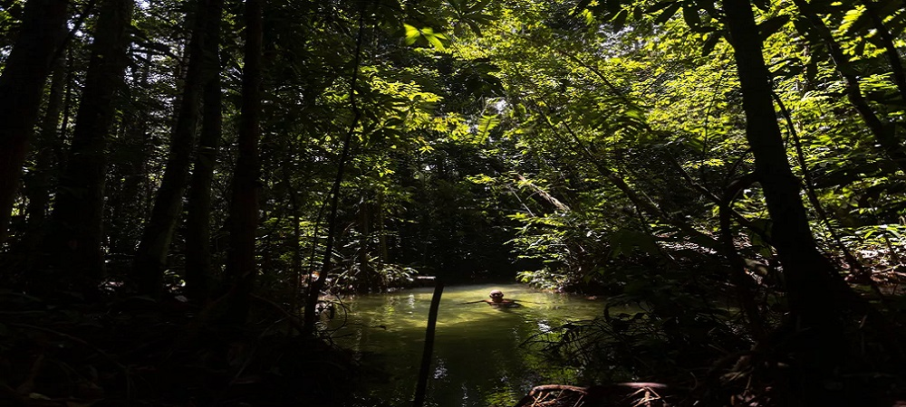

AMAZONIA
O Jardim do homem
2 / 3

Governo determina retorno das atividades de brigadistas
3 / 3

Fundo Amazônia tem R$2,9 Bilhões paralisados pelo governo, ação causou aumento de 34% nos alertas do Inpe no ano de 2020
Não há nada mais belo do que o canto dos pássaros, o canto da liberdade
O Agronegócio
O progresso destrutivo
A medida que progredimos mais evoluímos, a medida que evoluímos mais destruimos
Projetos de conservação
Ordem e, progresso?
Os cartões postais brasileiros escondem a violência ambiental como uma cortina de fumaça